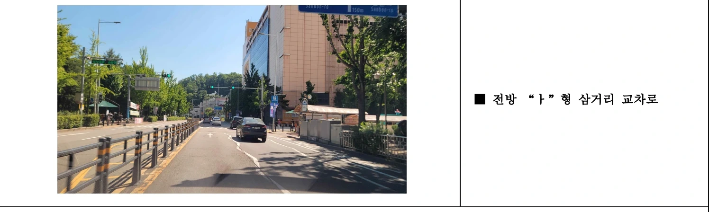

698. 다음 상황에서 가장 안전한 운전방법 2가지는?

- ①삼색신호등이 있는 교차로에서는 유턴표지가 없어도 다른 차마에 방해가 되지 않는다면 유턴할 수 있다.
- ②지그재그 형태의 백색실선은 진로변경제한선이므로 진로변경하면 안 된다.
- ③지그재그 형태의 백색실선은 서행의 의미를 나타내므로 속도를 줄여 서행한다.
- ④1차로 진행 중 우회전하고자 하는 경우 후행 차량이 없다면 방향지시등을 점등하고 3차로로 한 번에 진로변경한다.
- ⑤전방 삼색신호등이 적색등화로 바뀔 수 있으므로 녹색등화라 하더라도 정지선 앞에 미리 급정지하여 대기한다.
정답 보기
정답
② 지그재그 형태의 백색실선은 진로변경제한선이므로 진로변경하면 안 된다.
③ 지그재그 형태의 백색실선은 서행의 의미를 나타내므로 속도를 줄여 서행한다.
근거·해설
삼색신호등이 설치된 교차로에서는 유턴표지가 없으면 차마의 방해 여부를 불문하고 유턴이 허용되지 않으며, 지 그재그 형태의 백색실선은 진로변경제한선과 서행의 의미를 동시에 지니고 있으며, 우회전하고자 하는 경우 1개 차로씩 미리 진로를 변경하는 것이 안전하며, 불가한 경우 P턴을 이용하여 진행하는 것이 안전하다. 전방 차량신 호등이 적색등화로 바뀔 수 있으므로 이를 예상하고 속도를 줄이며 서행하는 것은 안전한 방법이나 녹색등화임에 도 불구하고 급정지하는 것은 후행차량과의 추돌 우려가 있어 위험하다.